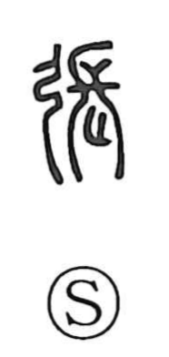

張

Uncategorized
Kun: haru | On: cho
to stretch ・ to spread ・ to open ・ to expand
Explanation
A phono-semantic compound: the bow radical signals the idea, and 長 serves as the phonetic, giving the on reading cho. As explained in the Shuowen, the core image is that of drawing a bowstring taut, an action also evoked in the Book of Odes (Minor Odes, Lucky Day), which speaks of having already stretched the bows. From this concrete act of tension and extension, the character broadened in use to mean spreading things out, widening, and opening.